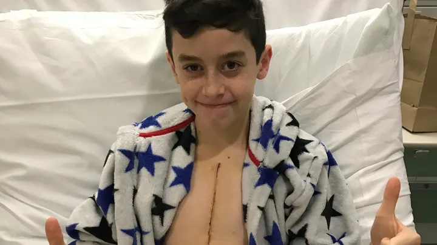

Our goal is to complete the full Yorkshire Three Peaks route in 12 hours.
3 Peaks
Pen-y-ghent, Whernside & Ingleborough
24 Miles
Around 1,585m of ascent
12 Hours
Our target to complete
1
Pen-y-ghent
The shortest but steepest of the three, often tackled first to get the toughest climb out of the way early.
2
Whernside
The highest of the three peaks, with the famous Ribblehead Viaduct in view along the way.
3
Ingleborough
A dramatic flat-topped summit and the final push before the finish.
Why We're Walking
Fin's story
Fin was born with a complex heart condition and needs life-changing heart surgery
in America that is not available on the NHS.
Every donation brings Fin closer to a second chance at life.
That's why we're taking on the Yorkshire Three Peaks Challenge — to raise as much as
we can towards the cost of Fin's surgery and give him and his family hope for the
future. Thank you for reading Fin's story and for anything you're able to give.

You Can Help
Three ways to get involved
Whatever you can offer — time, a donation, or just sharing this page — it all makes a difference.
🥾
Join the walk
Be part of the team on the day. Get in touch to find out how to join us on the trail.